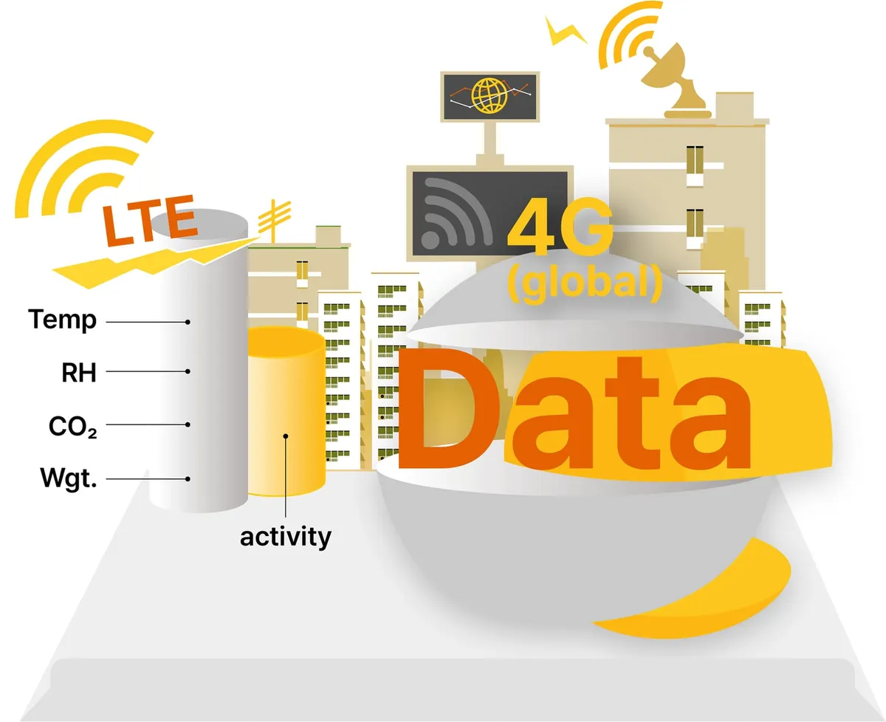
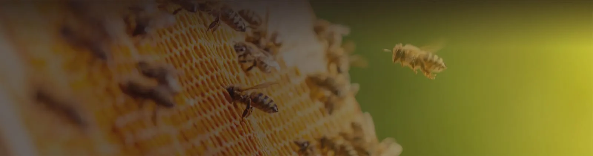

벌통 데이터 모으는 해외 기업들, 다음은 AI 질병 감지
비온팜 2025년 소개서, 국내는 유사 과제 22개에도 상용화 제품 없다고 분석

스마트 양봉 기업 온팜(브랜드 비온팜)은 2025년 4월 11일 홈페이지에 올린 ‘2025 비온팜 소개서’에서 해외 디지털 양봉 기업들이 벌통의 생육환경과 무게, 소리 데이터를 모으고 있으며 인공지능(AI) 분석을 통한 질병 감지로 영역을 넓힐 예정이라고 분석했다. 국내에는 유사 연구과제가 22개 있지만 아직 상용화 단계에 들어선 기술 제품은 없다고 진단했다.
소개서는 ‘글로벌 디지털 양봉 동향’ 첫머리에서 환경 변화에 따른 밀원(꿀벌의 먹이가 되는 식물) 감소와 이유 없는 벌떼 폐사(CCD)를 들어 전 세계적으로 중장기적인 생산성 향상 대책이 시급하다고 적었다.
데이터 모으는 해외 기업들
비온팜 소개서에 따르면 아일랜드의 스타트업 아피스프로텍트(ApisProtect)를 비롯해 비와이즈(Beewise), 비히어로(BeeHero) 등 해외 기업들은 벌통의 생육환경 모니터링과 무게 측정, 소리 데이터 등을 수집하고 있다. 소개서는 아피스프로텍트가 2018년 디지털 양봉 시스템으로 180만 달러의 투자를 받았고 비와이즈는 이스라엘 기업이라고 소개했다. 또 “미국, 프랑스 등 디지털 양봉의 선두급인 해외 기업들”이 AI 분석으로 질병을 감지하고 예방하는 방역·방제(병해충을 막고 없애는 일) 영역으로 확장할 예정이라고 적었다.
학계에서는 양봉에 AI를 쓴 연구를 모아 정리한 논문이 나왔다. 2024년 학술지 ‘인섹츠(Insects)’에 실린 헝가리 데브레첸대 Astuti 등의 문헌 검토에 따르면 그동안의 연구는 AI로 벌통 소리와 센서 값, 사진 등을 분석해 벌통 관리와 병해충 감지, 기후·서식지 관리에 쓸 수 있음을 보여 줬다. 다만 연구진은 양봉 전체를 아우르는 완전한 감시 수단은 아직 없다며 AI 감시 장치를 실제 양봉장 같은 현장 조건에서 더 빨리 시험해야 한다고 제안했다. 자세한 내용은 자료실 소개에서 볼 수 있다.

사진: 벌집 위에 모인 꿀벌과 날아드는 꿀벌. 비온팜 홈페이지 제품 소개 페이지에 실린 사진 (자료: 비온팜)비온팜이 본 국내 현황
비온팜은 국내의 경우 국가과학기술지식정보서비스(NTIS)에서 5년간의 유사 과제 22개(연구비 15억 원)를 찾을 수 있지만 아직 상용화 단계에 접어든 기술 제품은 없다고 분석했다. 국내 기술은 “단순도구나 벌통의 내부형태 변경 등의 양봉 자재에 집중”돼 있다고 진단했다. 다만 소개서는 이 5년이 언제부터 언제까지인지 밝히지 않았다.
같은 소개서에서 비온팜은 기후변화와 환경오염으로 꿀벌 폐사가 급증하며 국내 양봉 산업이 위기에 처해 있다고 밝혔다. 봉군(꿀벌 무리) 유지와 꿀벌 생존을 위해 밀원 확보, 스마트 양봉 기술 도입, 친환경 농업 방식 전환 등의 대책 마련이 시급하다는 것이다. 비온팜은 스마트 사육시설과 AI 기반 농업 예측 기술로 양봉 산업을 지속 가능한 산업으로 발전시켜야 한다고 주장했다.
비온팜은 2023년 12월 5일 홈페이지 게시판에 세계일보(2023년 5월 19일) 보도를 요약해 올리면서 과학 기술을 활용해 꿀벌을 보호하고 생육환경을 개선하는 스마트 벌통이 세계적으로 개발·보급되고 있다고 적었다. 이 보도는 국내 사례로 한화그룹이 2022년 세계 꿀벌의 날에 공개한 ‘솔라 비하이브(Solar Beehive)’를 들며 꿀벌 생육에 최적화된 환경을 제공하고 활동 데이터를 수집해 개체 수 보존 연구에도 기여하고 있다고 전했다. 비온팜은 소개서에서 솔라 비하이브가 2022년 한화그룹의 탄소중립 양봉 시스템이며 자사가 개발했다고 소개했다.
해외 공동개발 계획과 AI 실증
비온팜은 2025년 소개서의 개발 경과에서 2025년 10월 한-이스라엘 국제공동기술개발사업에 참여할 예정이라고 밝혔다. 이 항목의 비고란에는 ‘비와이즈(Beewise)’가 적혀 있다. 소개서에는 뉴질랜드와 우즈베키스탄에 디지털 양봉 글로벌 네트워크를 구축했다는 내용도 담겼다. 비온팜의 해외 실증 과정은 연해주에서 뉴질랜드까지, 비온팜 디지털 양봉 8년에 정리돼 있다.
2026년에는 비온팜이 과학기술정보통신부와 정보통신산업진흥원(NIPA)의 「엣지형 AI반도체 기반 뉴질랜드형 지능형 양봉 솔루션 해외실증」 과제(BeeAI)에 참여 기관으로 합류했다. 누리인포스가 주관하는 이 과제는 벌통 입구서 응애 살핀다, 한국 기업들 뉴질랜드 실증에서 다룬다.
자료: 비온팜 홈페이지(2026년 10월 8일 확인), 비온팜 2025 소개서, 세계일보(2023년 5월 19일), BeeAI 사업 홍보 자료(2026년 7월), Astuti 외(2024) Insects
저작권자 © 윙윙통신 무단 전재 및 재배포 금지